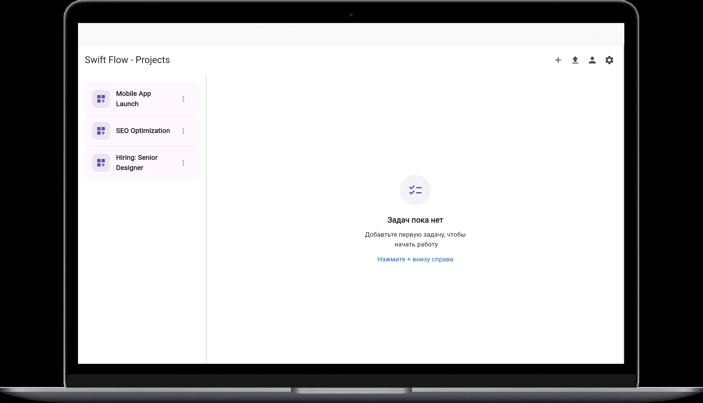
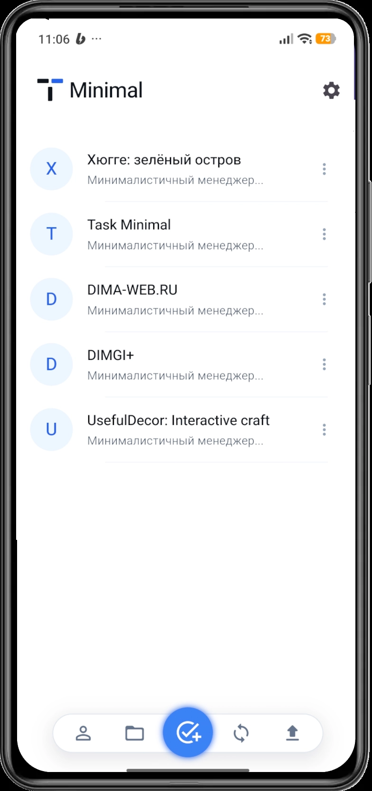

Менеджер задач нового поколения. Создан на Flutter для тех, кто ненавидит перегруженные интерфейсы и любит чистую продуктивность.


Никаких лишних полей, настроек и уведомлений. Вы видите только то, что нужно сделать прямо сейчас.
Невероятная плавность работы (120 FPS) и мгновенный отклик интерфейса.
Удобные горячие клавиши и структура, понятная тем, кто привык к IDE.
Проект полностью открыт. Вы можете кастомизировать его под себя или внести вклад в развитие сообщества.
"Многие инструменты превращают управление задачами в отдельную работу. SwiftFlow возвращает фокус на само действие, снижая когнитивную нагрузку до минимума."
Базовое управление задачами, поддержка кроссплатформенности, локальное хранение данных.
Синхронизация между устройствами и командные пространства (в разработке).
Возможность создания собственных расширений для интеграции с внешними сервисами.